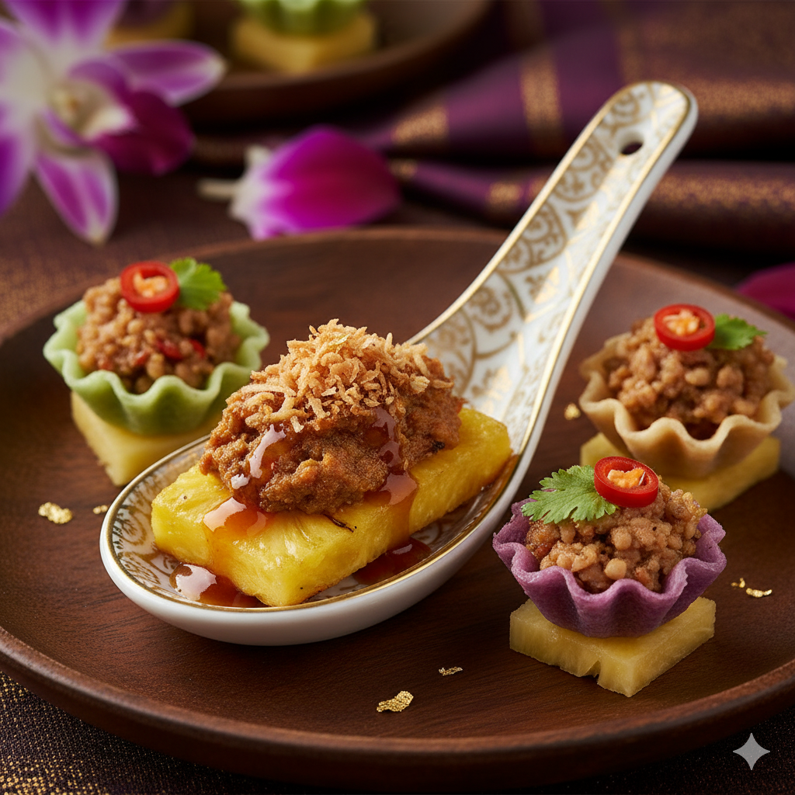
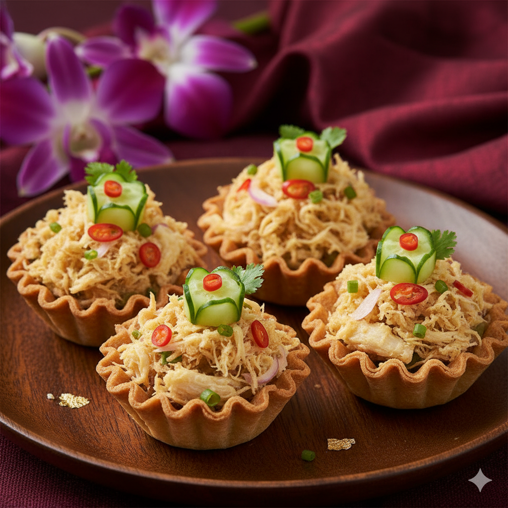
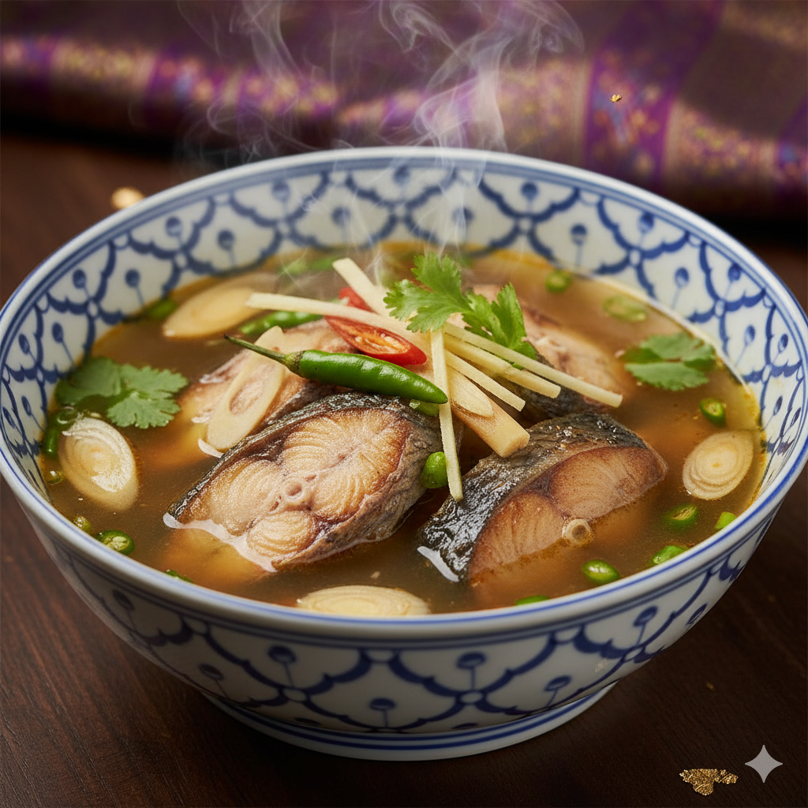
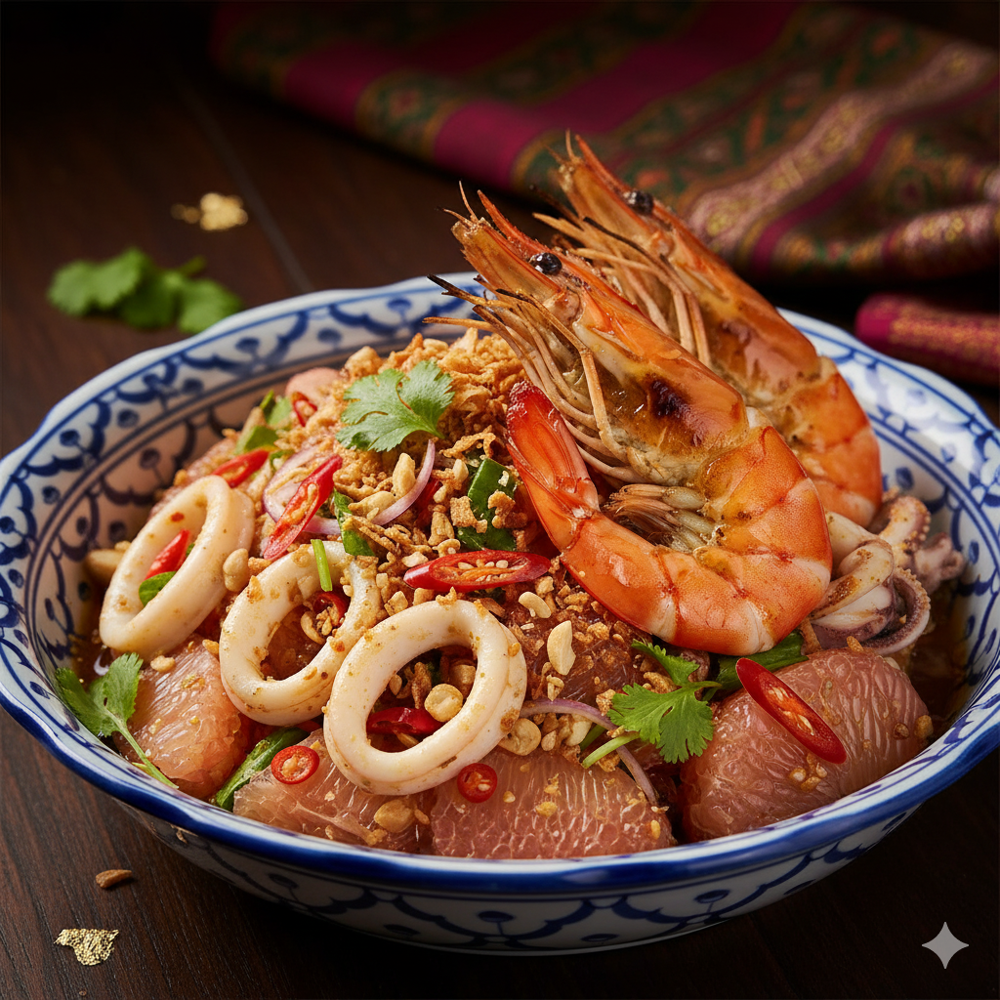
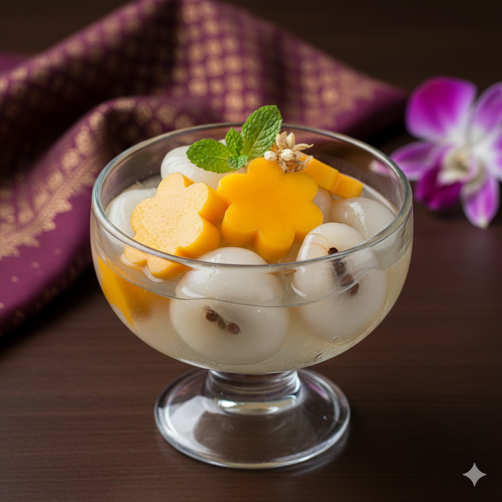
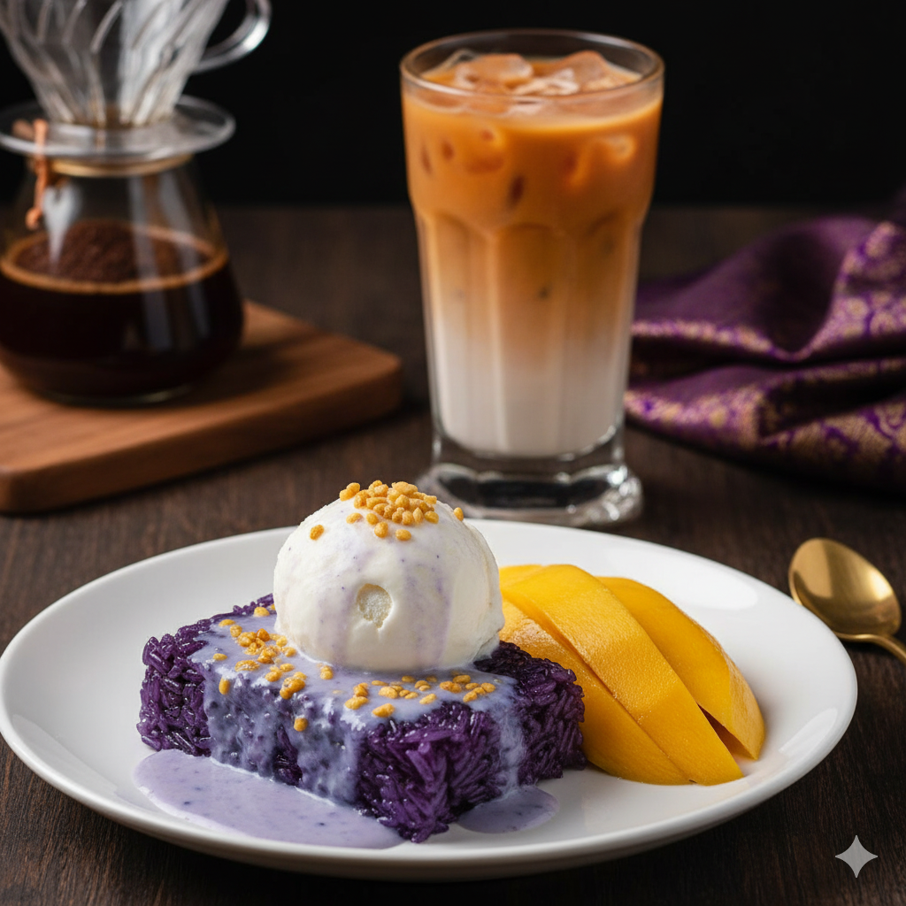

Appetizer1
คำมุกมณี คำเล็กๆ ที่รวมรสชาติเปรี้ยว หวาน เค็ม เผ็ด ประกอบด้วย สับปะรดภูเก็ตย่าง กับพริกเผากุ้งและมะพร้าวคั่ว ราดซอสมะขาม หรือม้าฮ่อแบบประณีต

คำมุกมณี คำเล็กๆ ที่รวมรสชาติเปรี้ยว หวาน เค็ม เผ็ด ประกอบด้วย สับปะรดภูเก็ตย่าง กับพริกเผากุ้งและมะพร้าวคั่ว ราดซอสมะขาม หรือม้าฮ่อแบบประณีต

กระทงทองไส้สลัดปลาฟู กระทงทองกรอบที่ทำอย่างพิถีพิถัน บรรจุด้วยสลัดเนื้อปลาอินทรีทอดกรอบฟู คลุกเคล้ากับน้ำยำสมุนไพรแบบชาววังรสกลมกล่อม เผ็ดเล็กน้อย พร้อมผักสดแกะสลัก

ต้มจิ๋วเนื้อปลาช่อนย่าง ซุปใสรสเปรี้ยวนำเผ็ดตามแบบละมุน และหอมกลิ่นสมุนไพรโดดเด่นด้วยรสชาติของเนื้อปลาช่อนย่างหอมๆ ที่ให้รสชาติเข้มข้นแต่เบา ไม่หนักเท่าต้มยำ

ยำส้มโอโบราณกุ้งแม่น้ำเผาและหมึกย่าง เสิร์ฟพร้อมข้าวหอมมะลิหุงน้ำดอกอัญชัน รสหวานอมเปรี้ยว คลุกเคล้ากับน้ำยำสูตรเฉพาะ หอมมะพร้าวคั่ว ถั่วลิสง และกุ้งแม่น้ำนนท์เผาตัวโต

ผลไม้ตามฤดูกาลลอยแก้ว รสหวานละมุนเย็นชื่นใจ เหมาะกับการล้างปากเป็นอย่างยิ่ง

ข้าวเหนียวมูนที่หุงอย่างพิถีพิถันด้วยน้ำอัญชันหอมๆ (สีม่วงคราม) คู่กับมะม่วงน้ำดอกไม้สุกงอมหวานฉ่ำ และไอศกรีมกะทิรสเข้มข้น เสิร์ฟคู่: ชาไทยรอยัล หรือ กาแฟดริปจากเมล็ดกาแฟไทยคุณภาพดี